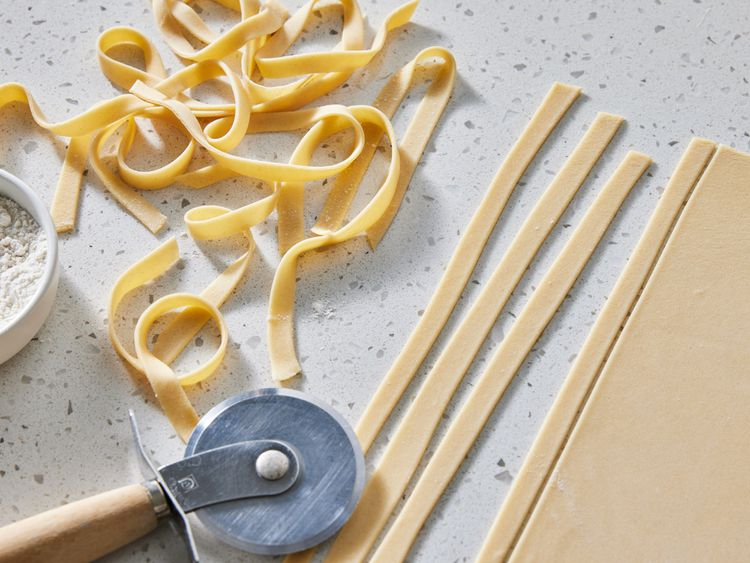

Basic Homemade Pasta

Description
An easy homemade pasta recipe that's simple to double or triple, depending on the amount you need.
If you have time, let the pasta sheet dry for 20 minutes before cutting. Hope you enjoy!
Ingredients
- 1 cup all-purpose flour
- ½ teaspoon salt
- 1 egg, beaten
- 2 tablespoons water (optional)
Directions
- Gather all ingredients
- Combine flour and salt in a medium bowl. Make a well in the center and add beaten egg.
Mix well until a stiff dough forms, adding up to 2 tablespoons of water if needed.
- Knead dough on a lightly floured surface until smooth, 3-4 minutes.
Wrap dough and let rest for 30-60 minutes.
- Roll dough by hand or with pasta machine to desired thickness, then cut into strips of desired width and length.
Original recipe at allrecipes.com
Front page